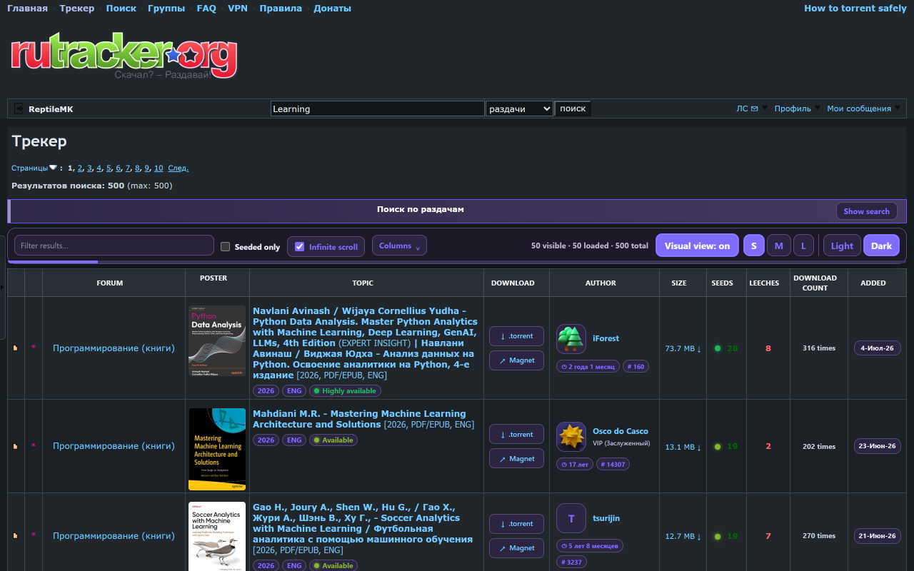
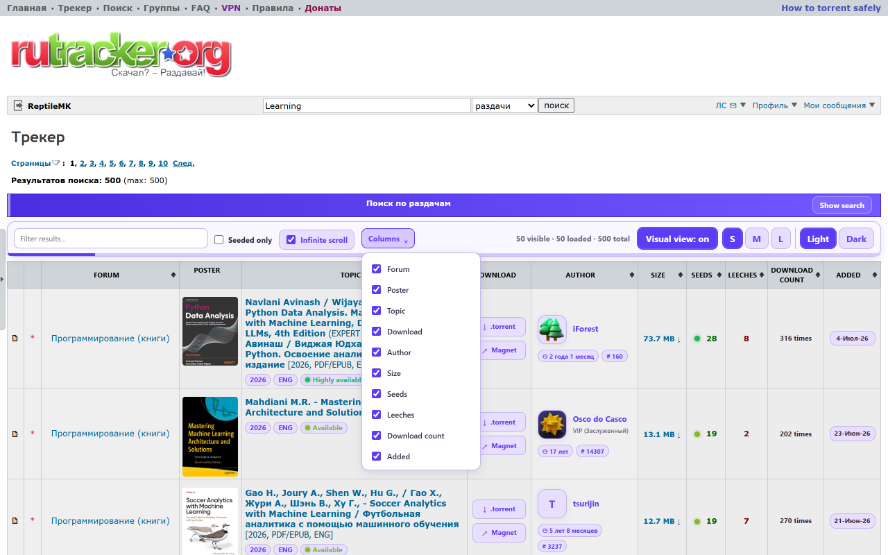
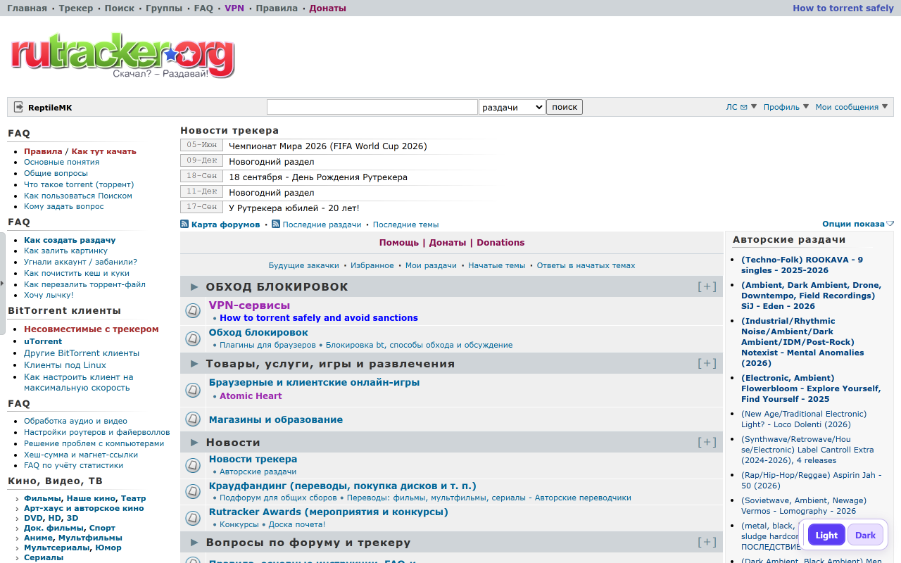
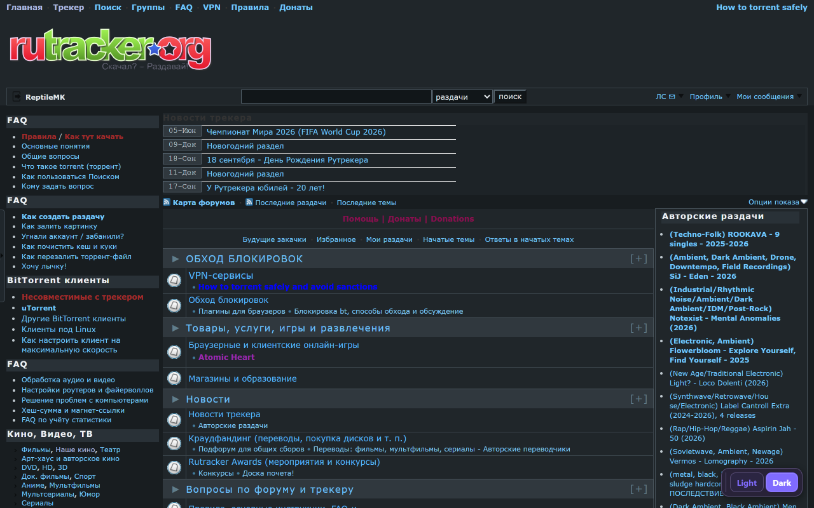

Posters and compact summaries
Recognize releases before reading every title. Posters and useful topic details load only when they approach the visible area.
Posters, quick filters, configurable columns, infinite scrolling, and a polished Light or Dark interface. Everything useful stays close; everything noisy gets out of the way.

Designed for faster scanning
The extension enhances the existing tracker interface without replacing the underlying page or changing how RuTracker works.
Recognize releases before reading every title. Posters and useful topic details load only when they approach the visible area.
Filter loaded rows instantly or keep only releases with seeds. No extra search request is needed.
Load the next results page near the bottom, with visible page separators and navigation state preserved.
Show only the information you need and choose between three poster sizes for every browsing style.
Apply a consistent theme across results, search, navigation, and forum pages without a bright loading flash.
Uses the browser language by default, with a manual override in the extension panel.
Real extension screenshots
These are unedited captures of version 1.0.0 running on RuTracker. Click any image to inspect it at full size.



Local by design
There are no ads, analytics, accounts, external APIs, or developer-operated telemetry. Preferences and a limited topic cache stay in your browser.
Read the complete privacy policyIndependent and unofficial
RuTracker Visual Enhancer is an independent project. If it saves you time, you can support its continued development on Ko-fi.
{kind=link}
{kind=link}
{kind=link}
{kind=link}